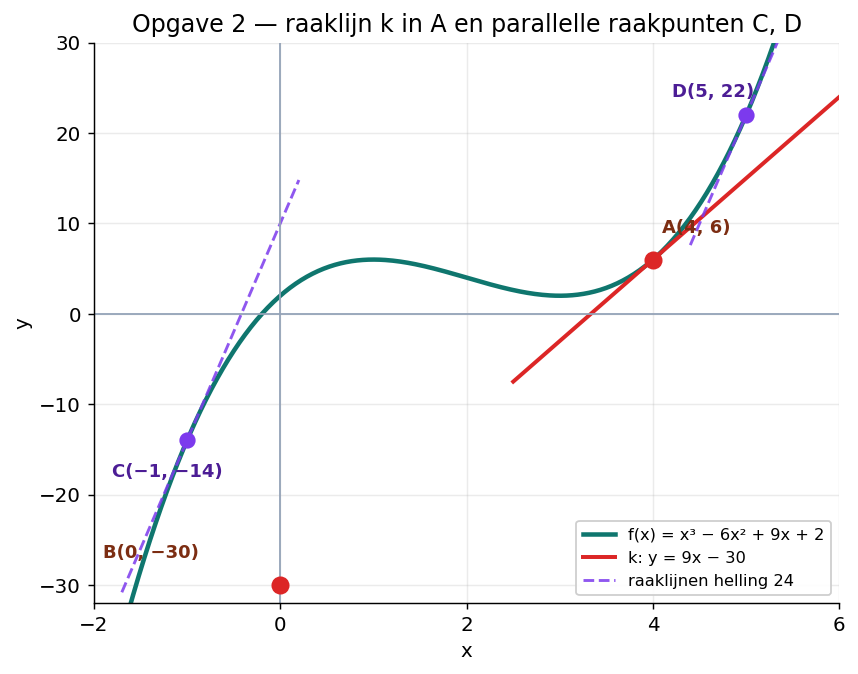
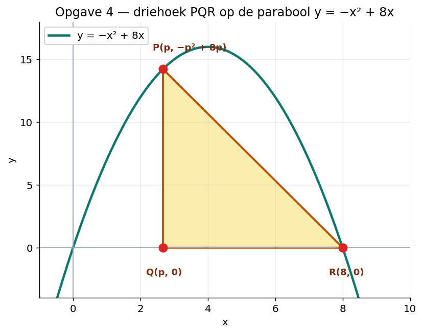

50 minuten · 4 opgaven · 39 punten · proefwerk-niveau
Differentieer de volgende functies. Schrijf het antwoord netjes terug in breukvorm of wortelvorm. Laat alleen negatieve of gebroken exponenten staan als de functie zelf zo gegeven was.
Tip: schrijf ³√x als x1/3 en deel eerst.
a) Werk de haakjes uit en differentieer term voor term.
b) Herschrijf eerst.
Terug naar wortelvorm. Schrijf x5/3 = x² · x2/3 = x²·³√x² en x−1/3 = 1/³√x.
c) Schrijf h(x) = 3·(5x − 2)−1/2. Kettingregel:
Gegeven is de functie f(x) = x³ − 6x² + 9x + 2.

a)
Lijn k: y = 9x + b. Vul A(4, 6) in:
B(0, −30).
b) Helling = 24 betekent f'(x) = 24:
y-waarden:
C(−1, −14) en D(5, 22).
c) Bepaal de toppen.
De grafiek stijgt-daalt-stijgt. De horizontale lijn y = p snijdt de grafiek drie keer dan en slechts dan als p strikt tussen min en max ligt.
Gegeven is de functie f(x) = √(20 − 4x) + ½x − 1.
Stap 1: bepaal het domein. Stap 2: bereken f'(x). Stap 3: los f'(x) = 0 op. Stap 4: bepaal of het een maximum of minimum is en geef het bereik in een ongelijkheid.
a) Domein: 20 − 4x ≥ 0 → x ≤ 5.
Schrijf f(x) = (20 − 4x)1/2 + ½x − 1. Met de kettingregel:
Stel f'(x) = 0:
Bij x → −∞ gaat de term ½x naar −∞ harder dan de wortelterm groeit, dus f → −∞. De top x = 1 is dus een maximum.
b)
Lijn k: y = −½x + b, door A(4, 3): b = 3 + 2 = 5. Dus k: y = −½x + 5. B(0, 5).
Lijn l ⊥ k door B: rcl · rck = −1, dus rcl = 2.
Snijpunt met x-as: 0 = 2x + 5 → x = −5/2.
Gegeven is de parabool y = −x² + 8x. Op de parabool ligt het punt P(p, yP) met 0 < p < 8. Op de x-as ligt het punt Q(p, 0). Het punt R(8, 0) is vast.

a) De hoek in Q is recht (PQ verticaal, QR horizontaal).
b) Werk eerst uit:
Sneller via productregel-aanpak (of: factor (8 − p) uit):
Stel A'(p) = 0:
c) Bereken A(8/3):
(Decimaal: ongeveer 37,93.)
Fouten gemaakt? Bekijk de samenvattingsvideo van de paragraaf waar het mis ging.